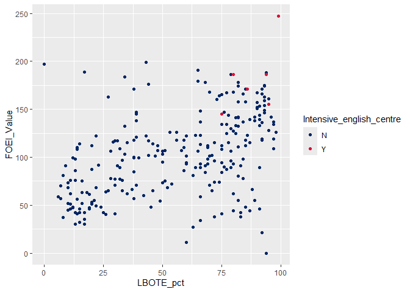
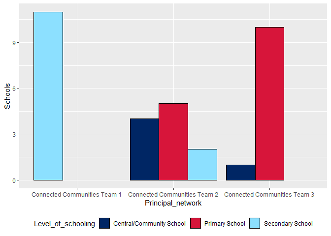
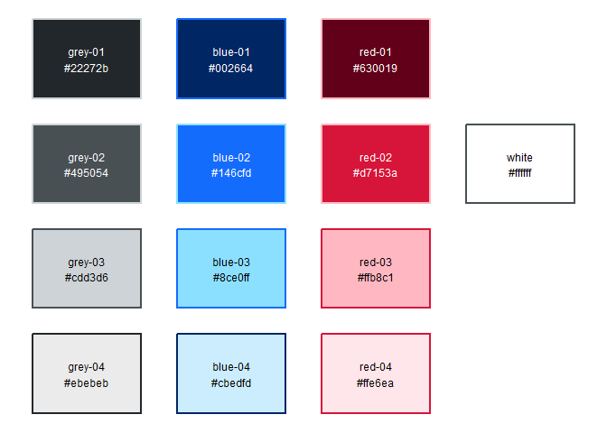
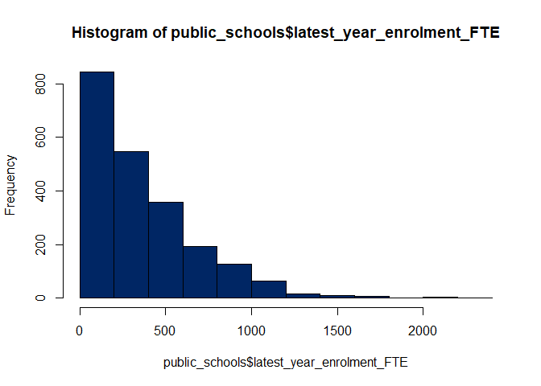
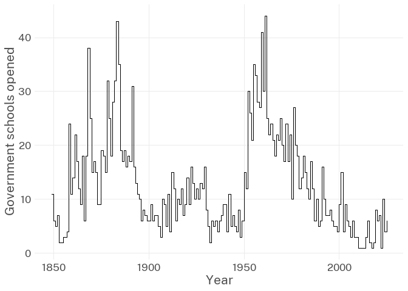
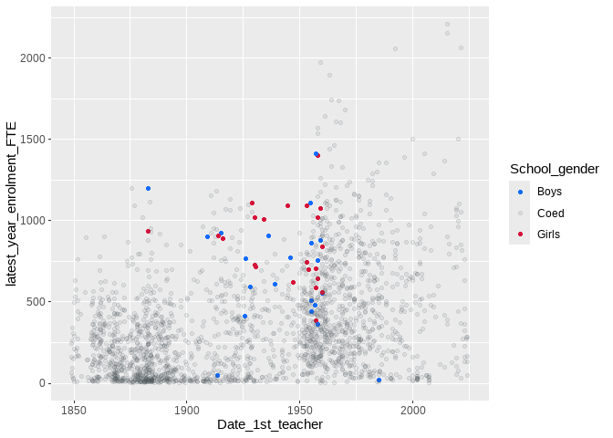

doestyle is an R package that helps produce brand-compliant figures and tables for NSW Department of Education publications. It is under development, but already includes features that ease the use of brand colours and typesetting in ggplot2 figures and flextable tables.
If you’re interested in contributing to development, please read the contributors’ guide and/or watch contributing to doestyle.
Installation
doestyle is not yet on CRAN, but it can be easily installed directly from Bitbucket with the remotes package:
# Install `remotes` if needed
if (!require("remotes")) install.packages("remotes")
# Install doestyle and its documentation using `remotes`
remotes::install_bitbucket("nsw-education/doestyle", build_vignettes = TRUE)The same command can be used to update your installed version of doestyle.
If you’re using RStudio on Windows and it prompts you to restart R before installing, it is safer to choose “No” - there is a known RStudio issue around reinstalling packages on Windows.
Usage examples
The following examples use data from the Public Schools Master Dataset, which is available as a package dataset named public_schools.
library(tidyverse)
library(doestyle)
# The Public Schools Master Dataset
head(public_schools)
#> # A tibble: 6 × 45
#> School_code AgeID School_name Street Town_suburb Postcode Phone School_Email
#> <chr> <chr> <chr> <chr> <chr> <chr> <chr> <chr>
#> 1 5423 <NA> John Brotchi… 1361 … Botany 2019 9316… johnbrotch-…
#> 2 8600 86659 Secondary Co… Level… Parramatta 2150 02 7… SCLanguages…
#> 3 8473 46360 Chifley Coll… 67 No… MOUNT DRUI… 2770 9625… chifcolsnr-…
#> 4 8325 46407 Moree Second… Alber… Moree 2400 6752… mscalberts-…
#> 5 8870 46426 St Marys Sen… Kalan… St Marys 2760 9623… stmaryssen-…
#> 6 8374 46489 Brisbane Wat… 25 ED… WOY WOY 2256 4341… woywoy-h.sc…
#> # ℹ 37 more variables: Website <chr>, Fax <chr>,
#> # latest_year_enrolment_FTE <dbl>, Indigenous_pct <dbl>, LBOTE_pct <dbl>,
#> # ICSEA_value <dbl>, Level_of_schooling <chr>, Selective_school <chr>,
#> # Opportunity_class <chr>, School_specialty_type <chr>, School_subtype <chr>,
#> # Support_classes <lgl>, Preschool_ind <chr>, Distance_education <chr>,
#> # Intensive_english_centre <chr>, School_gender <chr>,
#> # Late_opening_school <chr>, Date_1st_teacher <date>, LGA <chr>, …Quick branding
doestyle provides the scale functions scale_colour_doe() and scale_fill_doe() to easily apply brand colours to the colour or fill aesthetics of a ggplot2 object.
For a default colour scale, apply scale_colour_doe() with no arguments:
public_schools |>
filter(Operational_directorate == "Metropolitan South and West") |>
ggplot(aes(x = LBOTE_pct, y = FOEI_Value, colour = Intensive_english_centre)) +
geom_point() +
# Add a default department scale to the `colour` aesthetic. Note that `colour`
# has already been mapped onto the value of `Intensive_english_centre` in this
# plot's aesthetic mapping.
scale_colour_doe()
An on-brand default fill scale can be applied with scale_fill_doe(). Be aware that lighter colours, although part of the department’s official brand palette, may require a darker edge to meet our accessibility requirements for contrast.
public_schools |>
filter(str_detect(Principal_network, "Connected Communities")) |>
ggplot(aes(x = Principal_network, fill = Level_of_schooling)) +
geom_bar(colour = "black", position = position_dodge(preserve = "single")) +
theme(legend.position = "bottom") +
labs(y = "Schools") +
# Add a default department scale to the `fill` aesthetic. Note that `fill` has
# already been mapped onto the value of `Level_of_schooling` in this plot's
# aesthetic mapping.
scale_fill_doe()
Colours
doestyle provides a mapping from the NSW Government named colour palette to hex values that can be used in almost any R function that handles colours. Every colour defined by the NSW Government Design System is available, including the subset that makes up the Department of Education brand palette.
To list available colours by name, use list_doestyle_colours():
list_doestyle_colours()
#> # A tibble: 51 × 2
#> colour_name hex_value
#> <chr> <colour>
#> 1 grey-01 • #22272B
#> 2 grey-02 • #495054
#> 3 grey-03 • #CDD3D6
#> 4 grey-04 • #EBEBEB
#> 5 green-01 • #004000
#> 6 green-02 • #00AA45
#> 7 green-03 • #A8EDB3
#> 8 green-04 • #DBFADF
#> 9 teal-01 • #0B3F47
#> 10 teal-02 • #2E808E
#> # ℹ 41 more rowsMore detailed information about each colour is available in the built-in dataset colourdata, which can be filtered for Department of Education primary brand colours, auxiliary colours, or all NSW colours.
colourdata |>
filter(doe_primary)
#> # A tibble: 4 × 13
#> colour_name hex_value family tone nsw_brand doe_auxillary doe_brand
#> <chr> <colour> <chr> <int> <lgl> <lgl> <lgl>
#> 1 blue-01 • #002664 blue 1 TRUE FALSE TRUE
#> 2 blue-04 • #CBEDFD blue 4 TRUE FALSE TRUE
#> 3 red-02 • #D7153A red 2 TRUE FALSE TRUE
#> 4 white • #FFFFFF neutral 2 TRUE FALSE TRUE
#> # ℹ 6 more variables: doe_primary <lgl>, secondary_colour <chr>,
#> # text_colour <chr>, red <int>, green <int>, blue <int>The available colours can also be visualised with show_colours().
# Show swatches for the department's brand colours:
show_colours("brand")
To look up hex values, use doe_colours():
# Return hex values for named NSW Government colours:
doe_colours("blue-01", "red-02")
#> <palettes_colour[2]>
#> • #002664
#> • #D7153AThese values can be used in base R plotting functions, if you are not a ggplot2 user:
hist(public_schools$latest_year_enrolment_FTE, col = doe_colours("blue-01"))
Theming
doestyle currently contains one ggplot2 theme, theme_doe(). It uses minimal non-data ink, and sets the default font to Public Sans, the department’s primary brand font face. The theme is not currently very attractive - but you can help make it better by contributing to doestyle!
public_schools |>
group_by(year = year(Date_1st_teacher)) |>
count() |>
ggplot(aes(x = year, y = n)) +
geom_step() +
labs(x = "Year", y = "Government schools opened") +
# Apply a minimalist theme that uses the Public Sans typeface
theme_doe()
Palettes
Several palettes are provided by doestyle in a list of lists called doe_palettes. If used with no palette argument, scale_colour_doe() and scale_fill_doe() default to the values provided in doe_palettes$default:
doe_palettes$default
#> <palettes_colour[12]>
#> • #002664
#> • #D7153A
#> • #8CE0FF
#> • #FFB8C1
#> • #22272B
#> • #146CFD
#> • #630019
#> • #495054
#> • #CBEDFD
#> • #FFE6EA
#> • #CDD3D6
#> • #EBEBEBSee help(doe_palettes) for more information on the built-in palettes.
Custom palettes are easy to create with the assistance of pal_colour() from the palettes package.
# Load `palettes`
library(palettes)
# Define a custom palette, using named NSW Government colours.
my_custom_doe_palette <- pal_colour(
doe_colours("blue-02", "grey-02", "red-02"))
public_schools |>
ggplot(aes(x = Date_1st_teacher,
y = latest_year_enrolment_FTE,
colour = School_gender,
alpha = School_gender)) +
geom_point() +
scale_alpha_manual(values = c(1, 0.1, 1)) +
# Apply our custom palette to the `colour` aesthetic. Note that `colour` has
# already been mapped onto the value of `School_gender` in this plot's
# aesthetic mapping.
scale_colour_doe(my_custom_doe_palette)